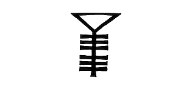
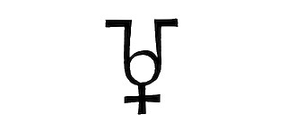

<!DOCTYPE html>
<html>
<head>
  <script src="../jspsych-6.0.5/jspsych.js"></script>
  <link rel="stylesheet" href="../jspsych-6.0.5/css/jspsych.css"></link>
  <script src="../jspsych-6.0.5/plugins/jspsych-html-button-response.js"></script>
  <script src="../jspsych-6.0.5/plugins/jspsych-image-button-response.js"></script>
  <script src="../jspsych-6.0.5/plugins/jspsych-image-keyboard-response.js"></script>
  <script src="../jspsych-6.0.5/plugins/jspsych-html-keyboard-response.js"></script>
    <script src="../jspsych-6.0.5/plugins/jspsych-instructions.js"></script>
</head>
<body></body>
<script>

var timeline = [];
var testStimuli = [];
var trial_pairsGain = []; 
var trial_pairsLoss = []; 
var stim1 = ""
var stim2 = ""
var stim3 = ""
var stim4 = ""
//color in-line:  color: #ff0000;
var fixCross = "<p><span style='font-size: 25px;'>+</span></p>"

/* define welcome message trial */
var welcome = {
  type: "instructions",
  pages: ["<p><strong>Hello, thank you for participating in our experiment. Please read the below instructions before proceeding.</strong></p>"+ "<p>You will now perform two tasks that are both around 2-3 minutes long. In each trial of the tasks, you have to choose between two different symbols displayed on the screen, above and below a central cross.</p>" +
  "<p> Press the 'Up-Arrow' on your keyboard to select the top symbol and the 'Down-Arrow' on your keyboard to select the bottom symbol:</p>" +
  "</img>"+
     "<div style='margin: auto 0;text-align:center;'>"+
  "<p style='display:inline-block;min-width:65.5%;'> As an outcome of your choice you may:</p>"+ 
  "<span><br>&#8226 get nothing</span>" +
  "<span><br>&#8226 gain 1 point</span>" +
  "<span><br>&#8226 loss 1 point</span>" +
  "<p style='display:inline-block;min-width:90.5%;'>  The two symbols displayed on a same screen are not equivalent in terms of outcome: with one you are more likely to get nothing than the other. Each symbol has its own meaning, regardless of where and when it is displayed.<p>" +
  "<pstyle='display:inline-block;min-width:37.5%';> The aim of the game is to win as many points as possible.</p>" +
  "<br> <p>Press 'next' to start."+
  "</div>"],
  post_trial_gap: 1000,
  show_clickable_nav:true
};
timeline.push(welcome);

// getting the subject condition variable from the url sent out the subjects
var participantID = jsPsych.data.getURLVariable('ParticipantID');
console.log('Participant ID is:', participantID);
if (typeof participantID === "undefined") {
alert("participant ID is undefined, assigning arbitrarily. ");
var participantID = 1;
}
jsPsych.data.addProperties({participant_ID: participantID});

function saveData() {
    var xhr = new XMLHttpRequest();
    xhr.open('POST', 'write_data.php'); // change 'write_data.php' to point to php script.
    xhr.setRequestHeader('Content-Type', 'application/json');
    xhr.onload = function() {
      if(xhr.status == 200){
        var response = JSON.parse(xhr.responseText);
        console.log(response.success);
      }
    };
    xhr.send(jsPsych.data.get().json());
  }


//assigning conditions
if(participantID % 4 == 1){
partGroup =1;
}
else if(participantID % 4 == 2){
partGroup =2;
}
else if(participantID % 4 == 3){
partGroup =3;
}
else if(participantID % 4 == 0){
partGroup =4;
};

jsPsych.data.addProperties({part_group: partGroup}) // update the global variable
console.log('Group is defined as: ', partGroup);

if (partGroup == 1){
  // #1 Win Pairs
var winPairUp_w = {stimulus: stim1+fixCross+stim2, pairType: "gain", pairOri: "a-up", win: true}
var winPairUp_n = {stimulus: stim1+fixCross+stim2, pairType: "gain", pairOri: "a-up", win: false}
var winPairDown_w = {stimulus: stim2+fixCross+stim1, pairType: "gain", pairOri: "a-down", win: true}
var winPairDown_n = {stimulus: stim2+fixCross+stim1, pairType: "gain", pairOri: "a-down", win: false}

// #2 Loss Pairs
var lossPairUp_l = {stimulus: stim3 + fixCross+ stim4, pairType: "loss", pairOri: "a-up", win: true}
var lossPairUp_n = {stimulus: stim3 + fixCross+ stim4, pairType: "loss", pairOri: "a-up", win: false}
var lossPairDown_l = {stimulus: stim4 + fixCross+ stim3, pairType: "loss", pairOri: "a-down", win: true}
var lossPairDown_n = {stimulus: stim4 + fixCross+ stim3, pairType: "loss", pairOri: "a-down", win: false}
console.log("partGroup should be 1:", partGroup)
} 

else if (partGroup == 2){
  // #1 Win Pairs
var winPairUp_w = {stimulus: stim2 + fixCross+ stim3, pairType: "gain", pairOri: "a-up", win: true}
var winPairUp_n = {stimulus: stim2 + fixCross+ stim3, pairType: "gain", pairOri: "a-up", win: false}
var winPairDown_w = {stimulus: stim3 + fixCross+ stim2, pairType: "gain", pairOri: "a-down", win: true}
var winPairDown_n = {stimulus: stim3 + fixCross+ stim2, pairType: "gain", pairOri: "a-down", win: false}

// #2 Loss Pairs
var lossPairUp_l = {stimulus: stim4 + fixCross+ stim1, pairType: "loss", pairOri: "a-up", win: true}
var lossPairUp_n = {stimulus: stim4 + fixCross + stim1, pairType: "loss", pairOri: "a-up", win: false}
var lossPairDown_l = {stimulus: stim1 + fixCross+ stim4, pairType: "loss", pairOri: "a-down", win: true}
var lossPairDown_n = {stimulus: stim1 + fixCross+ stim4, pairType: "loss", pairOri: "a-down", win: false}
console.log("partGroup should be 2:", partGroup)
} 

else if (partGroup == 3){
  // #1 Win Pairs
var winPairUp_w = {stimulus: stim3 + fixCross+ stim4, pairType: "gain", pairOri: "a-up", win: true}
var winPairUp_n = {stimulus: stim3 + fixCross+ stim4, pairType: "gain", pairOri: "a-up", win: false}
var winPairDown_w = {stimulus: stim4 + fixCross+ stim3, pairType: "gain", pairOri: "a-down", win: true}
var winPairDown_n = {stimulus: stim4 + fixCross+ stim3, pairType: "gain", pairOri: "a-down", win: false}

// #2 Loss Pairs
var lossPairUp_l = {stimulus: stim1 + fixCross+ stim2, pairType: "loss", pairOri: "a-up", win: true}
var lossPairUp_n = {stimulus: stim1 + fixCross+ stim2, pairType: "loss", pairOri: "a-up", win: false}
var lossPairDown_l = {stimulus: stim2 + fixCross+ stim1, pairType: "loss", pairOri: "a-down", win: true}
var lossPairDown_n = {stimulus: stim2 + fixCross+ stim1, pairType: "loss", pairOri: "a-down", win: false}
console.log("partGroup should be 3:", partGroup)
} 

else if (partGroup == 4){
  // #1 Win Pairs
var winPairUp_w = {stimulus: stim4 + fixCross+ stim1, pairType: "gain", pairOri: "a-up", win: true}
var winPairUp_n = {stimulus: stim4 + fixCross+ stim1, pairType: "gain", pairOri: "a-up", win: false}
var winPairDown_w = {stimulus: stim1 + fixCross+ stim4, pairType: "gain", pairOri: "a-down", win: true}
var winPairDown_n = {stimulus: stim1 + fixCross+ stim4, pairType: "gain", pairOri: "a-down", win: false}

// #2 Loss Pairs
var lossPairUp_l = {stimulus: stim2 + fixCross+ stim3, pairType: "loss", pairOri: "a-up", win: true}
var lossPairUp_n = {stimulus: stim2 + fixCross+ stim3, pairType: "loss", pairOri: "a-up", win: false}
var lossPairDown_l = {stimulus: stim3 + fixCross+ stim2, pairType: "loss", pairOri: "a-down", win: true}
var lossPairDown_n = {stimulus: stim3 + fixCross+ stim2, pairType: "loss", pairOri: "a-down", win: false}

console.log("partGroup should be 4:", partGroup)
}

trial_pairsGain.push(
  winPairUp_w, 
  winPairUp_w, 
  winPairUp_w, 
  winPairUp_w, 
  winPairUp_n,
  winPairDown_w, 
  winPairDown_w, 
  winPairDown_w, 
  winPairDown_w,
  winPairDown_n,
  );

  //loss
trial_pairsLoss.push(
  lossPairUp_l,
  lossPairUp_l,
  lossPairUp_l,
  lossPairUp_l,
  lossPairUp_n,
  lossPairDown_l,
  lossPairDown_l,
  lossPairDown_l,
  lossPairDown_l,
  lossPairDown_n
  );

//randomizing the order of trials
var trial_pairsGain = jsPsych.randomization.repeat(trial_pairsGain, 3);
var trial_pairsLoss = jsPsych.randomization.repeat(trial_pairsLoss, 3);

var fixation = {
      type: 'html-keyboard-response',
      stimulus: '+',
      choices: jsPsych.NO_KEYS,
      trial_duration: 500
    };

var twoImagesGain = {
    type: 'html-keyboard-response',
    stimulus: jsPsych.timelineVariable('stimulus'),
    choices: ['uparrow', 'downarrow'],
    //trial_duration: 2000,
    data: {pair_type: jsPsych.timelineVariable('pairType'), pair_ori: jsPsych.timelineVariable('pairOri'), isItWin: jsPsych.timelineVariable('win')},
    //check what the response
    on_finish: function (data) {
      var responseGiven = jsPsych.data.get().last(1).values()[0].key_press;
      var pair_type = jsPsych.data.get().last(1).values()[0].pair_type;
      var pair_ori = jsPsych.data.get().last(1).values()[0].pair_ori;
      var win_type = jsPsych.data.get().last(1).values()[0].isItWin;

      if (pair_type == "gain" && responseGiven == 38 && pair_ori == "a-up" && win_type == true) { // 38 uparrow, 40 downarrow 
        console.log('pair from gain; pressed up and ori was up and win is true')
        data.accuracy = 1
      } else if (pair_type == "gain" && responseGiven == 40 && pair_ori == "a-down" && win_type == true) {
        console.log('pair from gain; pressed up and ori was down and win is true') 
        data.accuracy = 1
      // to process %20 wrong select but gained trials
      } else if (pair_type == "gain" && responseGiven == 40 && pair_ori == "a-up" && win_type == false) {
        console.log('pair from gain; pressed up and ori was down and win is true') 
        data.accuracy = 1
      } else if (pair_type == "gain" && responseGiven == 38 && pair_ori == "a-down" && win_type == false) {
        console.log('pair from gain; pressed up and ori was down and win is true') 
        data.accuracy = 1

      } else {
        console.log('running else');
        console.log('responseGiven', responseGiven);
        console.log('pair_ori', pair_ori);
        console.log('isItWin', win_type);
        data.accuracy = 0
      }
    }
  }

var twoImagesLoss = {
    type: 'html-keyboard-response',
    stimulus: jsPsych.timelineVariable('stimulus'),
    choices: ['uparrow', 'downarrow'],
    data: {pair_type: jsPsych.timelineVariable('pairType'), pair_ori: jsPsych.timelineVariable('pairOri'), isItWin: jsPsych.timelineVariable('win')},
    //check what the response
    on_finish: function (data) {
      var responseGiven = jsPsych.data.get().last(1).values()[0].key_press;
      var pair_type = jsPsych.data.get().last(1).values()[0].pair_type;
      var pair_ori = jsPsych.data.get().last(1).values()[0].pair_ori;
      var win_type = jsPsych.data.get().last(1).values()[0].isItWin;
        // loss logic


      if (pair_type == "loss" && responseGiven == 38 && pair_ori == "a-up" && win_type == true) {
        console.log('pair from loss; pressed down and ori was down and win is true, (loss 1)') 
        data.accuracy = -1
      } else if (pair_type == "loss" && responseGiven == 40 && pair_ori == "a-down" && win_type == true) {
        console.log('pair from loss; pressed down and ori was down and win is true, (loss 1)') 
        data.accuracy = -1
      // to process %20 wrong select but gained trials
      } else if (pair_type == "loss" && responseGiven == 40 && pair_ori == "a-up" && win_type == false) {
        console.log('pair from gain; pressed up and ori was down and win is true') 
        data.accuracy = -1
      } else if (pair_type == "loss" && responseGiven == 38 && pair_ori == "a-down" && win_type == false) {
        console.log('pair from gain; pressed up and ori was down and win is true') 
        data.accuracy = -1

      } else {
        console.log('running else');
        console.log('responseGiven', responseGiven);
        console.log('pair_ori', pair_ori);
        console.log('isItWin', win_type);
        data.accuracy = 0
      }
    }
  }

var responseFeedback = {
    type: "html-keyboard-response",
    stimulus: function () {
        var responseAccuracy = jsPsych.data.get().last(1).values()[0].accuracy; // get the data from two trials prior
          if (responseAccuracy == 1) {
            return "<p><span style='font-size: 25px;'>Gain 1 Point</span></p>";
          } else if (responseAccuracy == -1) {
            return "<p><span style='font-size: 25px;'>Lose 1 Point</span></p>";
          } else {
            return "<p><span style='font-size: 25px;'>Get Nothing</span></p>";
          }
      },
    trial_duration: 1500,
    response_ends_trial = false
};


var taskSwitchScreen = {
  type: "instructions",
  pages: ["<p> You have finished the first task. You will now start the next task with new symbols. <br>Press 'next' to start.</p>"],
  show_clickable_nav:true
};

/*defining debriefing block*/
var debrief = {
  type: "html-keyboard-response",
  choices: jsPsych.NO_KEYS,
  trial_duration: 5000,
  stimulus: function() {
    //var total_trials = Math.round(jsPsych.data.get().filter({trial_type: 'html-keyboard-response'}).count() -2);
    //var total_trials = jsPsych.data.get().filter({trial_type: 'image-keyboard-response'}).count();
    var corrResp = Math.round(jsPsych.data.get().filter({accuracy: 1}).count());
    var wrongResp = Math.round(jsPsych.data.get().filter({accuracy: -1}).count());
    var totalScore = corrResp-wrongResp
    //var congruent_rt = Math.round(jsPsych.data.get().filter({correct: true, stim_type: 'congruent'}).select('rt').mean());
    //var incongruent_rt = Math.round(jsPsych.data.get().filter({correct: true, stim_type: 'incongruent'}).select('rt').mean());
    var subjID = jsPsych.data.get().last(1).values()[0]['participantCode']
    return "<p>You earned "+totalScore+ " points.</p>" +
    "<p><br>The experiment is now over. Thanks so much for participating.</p>";
  }
};

//assigning test procedures
var testProcedureGain = {
    timeline: [twoImagesGain,responseFeedback],
    timeline_variables: trial_pairsGain
};

var testProcedureLoss = {
    timeline: [twoImagesLoss,responseFeedback],
    timeline_variables: trial_pairsLoss
};

//assiging task order based on the participantID
if(participantID % 8 == 5 || participantID % 8 == 6 || participantID % 8 == 7 || participantID % 8 == 0){
  timeline.push(testProcedureLoss, taskSwitchScreen, testProcedureGain)
  console.log ("loss task starts first")
  var gainFirst = false
} else {
timeline.push(testProcedureGain, taskSwitchScreen, testProcedureLoss, debrief)
var gainFirst = true
console.log ("gain task starts first")
}
jsPsych.data.addProperties({gain_first: gainFirst})

  jsPsych.init({
    timeline: timeline,
    //on_finish: function() {
      //jsPsych.data.displayData();
    //}
    on_finish: saveData
  });

</script>
</html>
